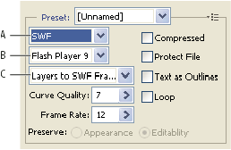

SWF optimization options (Illustrator)
The Adobe Flash (SWF) file format is a vector-based graphics file format for the creation of scalable, compact graphics for the web. Because the file format is vector-based, the artwork maintains its image quality at any resolution. The SWF format is ideal for the creation of animation frames, but you can also save raster images in SWF format or mix raster and vector graphics.

Optimization settings for SWF
- A.
- File format menu
- B.
- Flash Player menu
- C.
- Export menu
- Preset
- Specifies the preconfigured set of options you want to use for export. You can create new presets by setting options as desired, and then choosing Save Settings from the panel menu. (To open the panel menu, click the triangle to the right of the Preset menu.)
- Flash Player Version
- Specifies the earliest version of Flash Player that will support the exported file.
- Type Of Export
-
Determines how layers are exported. Select AI File To SWF
File to export the artwork to a single frame. Select Layers To SWF
Frames to export the artwork on each layer to a separate SWF frame,
creating an animated SWF.
Note: Select AI File To SWF File to preserve layer clipping masks.
- Curve Quality
- Specifies the accuracy of the bezier curves. A low number decreases the exported file size with a slight loss of curve quality. A higher number increases the accuracy of the bezier curve reproduction, but results in a larger file size.
- Frame Rate
- Specifies the rate at which the animation will play in a Flash viewer. This option is available only for Layers To SWF Frames.
- Loop
- Causes the animation to loop continuously, rather than play once and then stop, when played in a Flash viewer. This option is available only for Layers To SWF Frames.
- Preserve Appearance
- Expands strokes into stroke-shaped fills and flattens any blending modes and transparency that SWF doesn’t support.
- Preserve Editability Where Possible
-
Converts strokes to SWF strokes, and approximates or ignores
transparency that SWF doesn’t support.
Note: SWF supports object-level opacity only.
 Use the Export command instead
of the Save For Web & Devices command to maintain artwork’s
stacking order by exporting each layer to a separate SWF file. You can
then import the exported SWF files into Adobe Flash simultaneously.
Use the Export command instead
of the Save For Web & Devices command to maintain artwork’s
stacking order by exporting each layer to a separate SWF file. You can
then import the exported SWF files into Adobe Flash simultaneously. - Compressed
- Compresses the exported file.
- Protect File
- Protects the file so that it cannot be imported by applications other than Flash.
- Text As Outlines
- Converts all text to outlines to maintain appearance. If you plan to edit the text in Flash, don’t select this option.